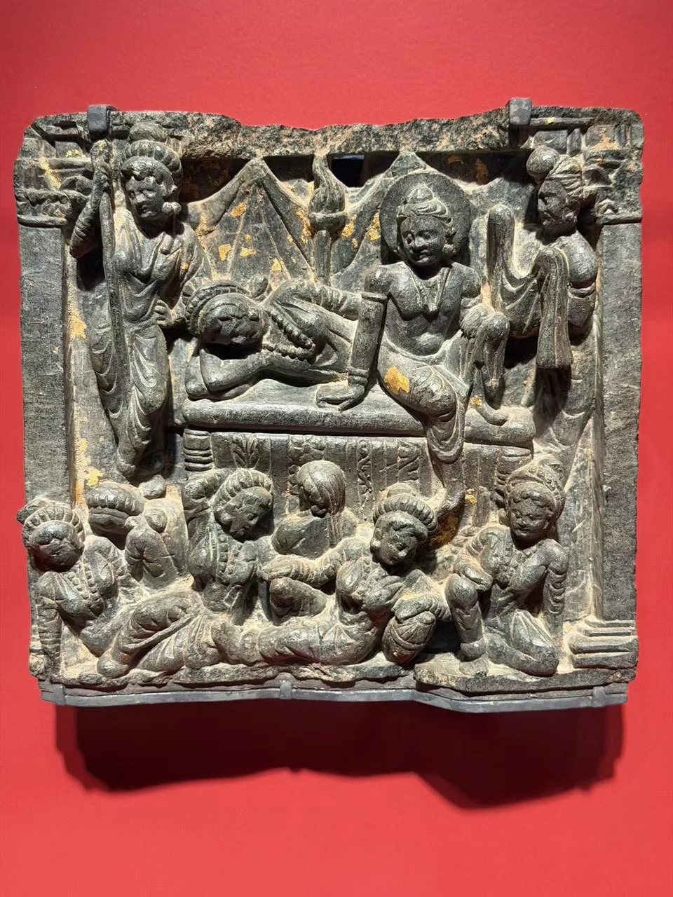
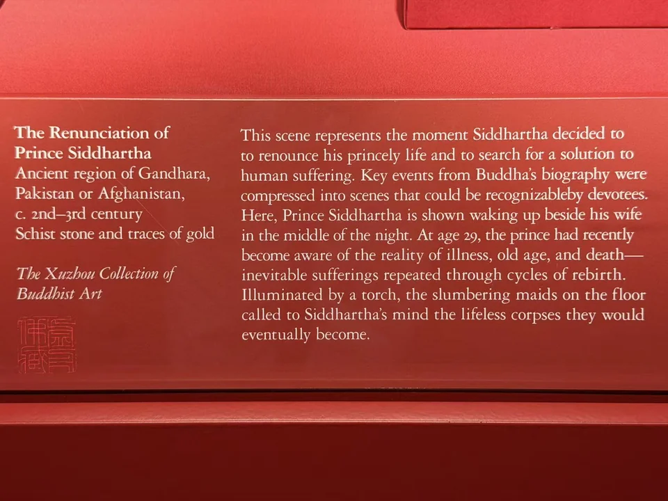

THE XUZHOU COLLECTION
悉达多太子出家浮雕
The Renunciation of Prince Siddhartha
寝室与睡眠中的人物，构成出家前的一幕。

- 地区
- 犍陀罗，今巴基斯坦或阿富汗
- 年代
- 约2—3世纪
- 材料
- 片岩、残留金彩
- 收藏
- 虚舟收藏（私人收藏）
- 观看地点
- 休斯顿美术馆（MFAH）
作品札记
浮雕用上、下两层容纳人物：上方的床榻、帷幔和坐起的人物相连，下方几个人物姿态错落，有的垂首，有的相倚。深色片岩上散见金色残迹，衣饰、身体与背景之间的层次仍很清楚。
馆方将画面解释为悉达多太子夜间醒来、决意离开宫廷的场景，包含妻子与熟睡的侍女。它表现的是出家叙事中的室内时刻，画面本身没有骑马出城的队列。年代约2—3世纪，属于古代犍陀罗地区。
现场展签与原始记录

- 题名
- The Renunciation of Prince Siddhartha
- 地区
- Ancient Gandhara, Pakistan or Afghanistan
- 年代
- c. 2nd–3rd century
- 材料
- Schist stone and traces of gold